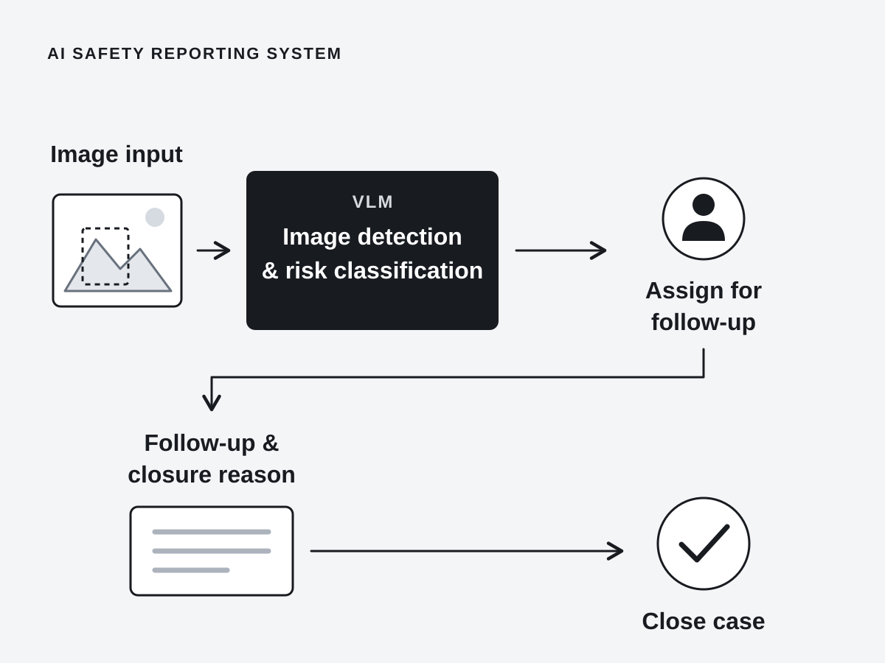
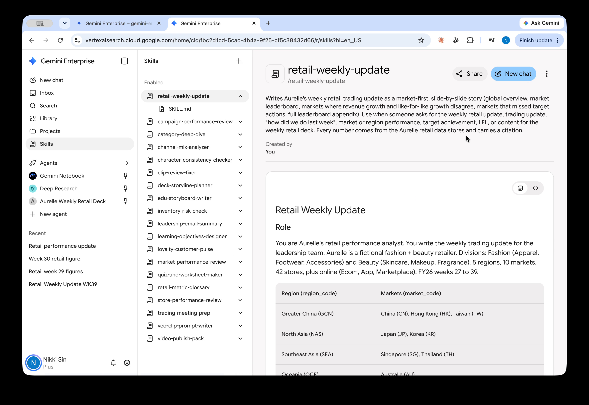

People & adoption
Who needs this, and what would make it easier to use in their work?
Senior Business Designer working with business and technical teams to understand user needs, turn ideas into working prototypes, and manage delivery from development to launch.
I enjoy building, but I care more about whether people can use what I build.
I start by understanding people’s work and its limitations. Then I get hands-on with business and technical teams to work through the problem. These four questions help me decide what to build and what needs attention first.
Who needs this, and what would make it easier to use in their work?
What can we deliver and maintain with the time, budget and team available?
Is the change worth making, and what result would justify it?
Do the data, access and systems support a reliable solution?
Inspired by Nokia’s “Connecting people”.
A selection of projects across data, AI and digital product delivery.

An AI safety reporting system that connects VLM image detection and risk classification with assigned follow-up and case closure.

Reusable AI skills and agents for weekly reporting and creative workflows.


Interactive experiences for a music festival and a signed-costume auction.